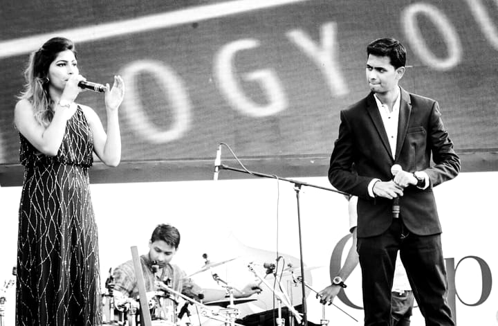
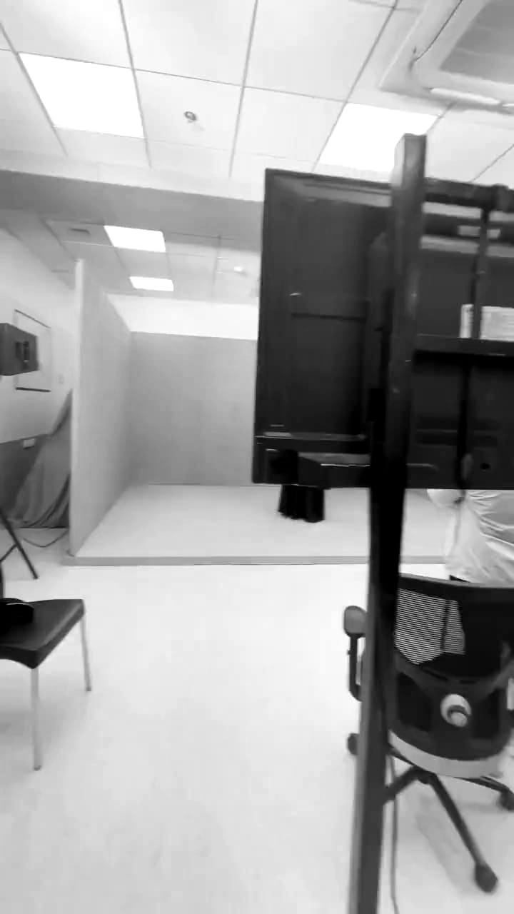
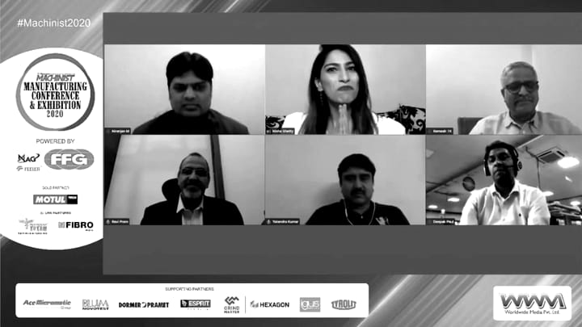
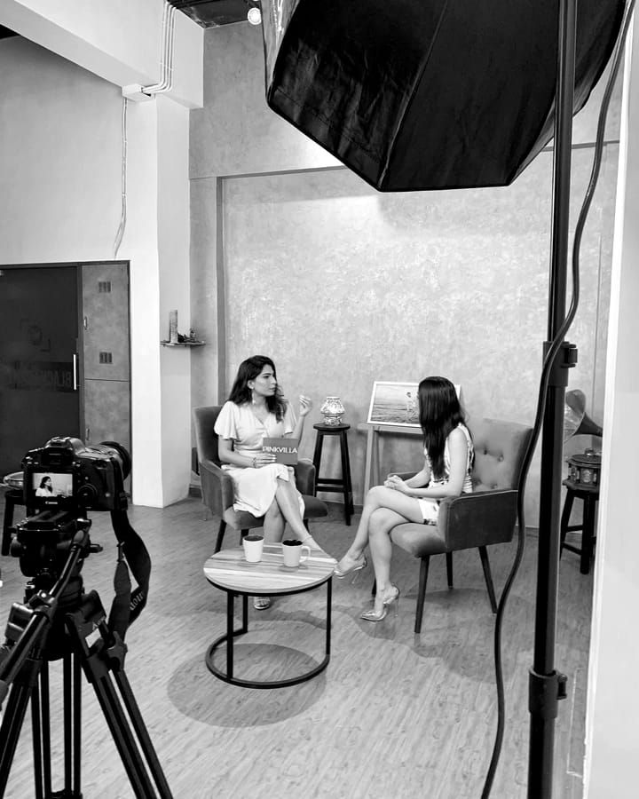
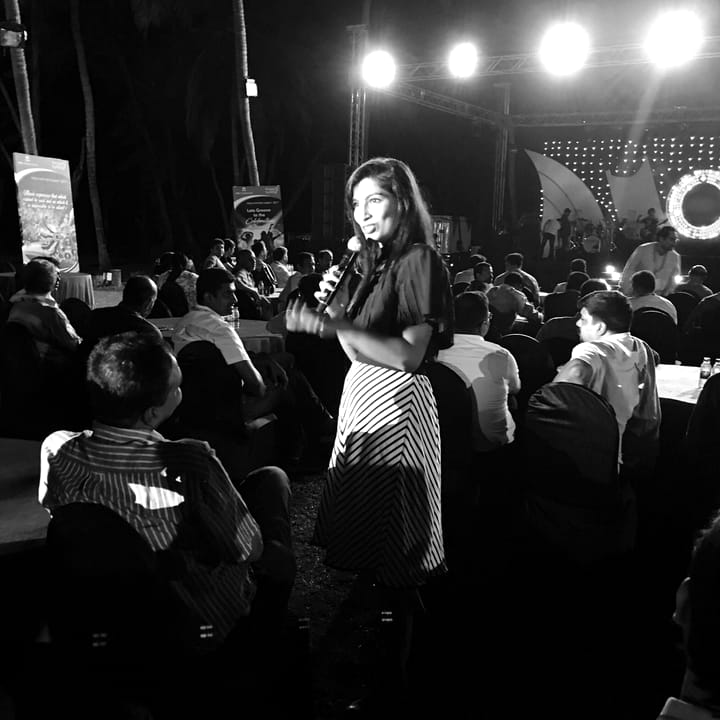

Method काम का तरीक़ा
How she works, only where her posts show it; then how a request works.
01Preparation तैयारी
In Tbilisi in July 2025 she lists the work as “events, meetings and scripting”. In Baku in September 2024, her post describes a conference followed by a gala after a five-minute changeover. Running orders and cue cards appear in her posts from 2016 to 2026.
Basis · आधार
- Vol. 2025 · No. 09
- Vol. 2024 · No. 10
- Her posts

02Languages भाषाएँ
English and Hindi.
Basis · आधार
- Her bios (English and Hindi)
03Co-hosting सह-संचालन
A newspaper’s printed credits for an event in August 2021 name her as one of two hosts (her post). Before full time, she shared her employer’s annual-day stage with a co-host (April 2016).
Basis · आधार
- Her post, Aug 2021 (not a ledger line)
- Before full time · d

04Virtual & on-camera वर्चुअल और कैमरे पर
12 events in the ledger are virtual or on camera, 2020–2025: conferences, awards, interviews and a filmed series. Her first virtual shoot was in September 2017 (her caption).
Basis · आधार
- Format “Virtual & on-camera”, 12 lines


05Interviews and panels इंटरव्यू और पैनल
She interviews guests and moderates panels: the WOW Dialogues panels in 2019, studio interviews in 2020 and 2022.

06Multi-day programmes कई दिनों के कार्यक्रम
10 events in the ledger run over more than one day, from two days to six.
Basis · आधार
- Lines whose details state a number of days or a date range


07Formats प्रारूप
Every line in the ledger, by the kind of event it was. Rows run from the most events to the fewest; each volume shows its own formats too.
- Awards & R&Rपुरस्कार और सम्मान समारोह 252017–2026in volumes, + 1 on the loose sheet
- Corporate event (other)कॉर्पोरेट कार्यक्रम (अन्य) 172019–2026
- Conference & summitसम्मेलन 162018–2026
- Launchलॉन्च 132016–2026
- Dealer & partner meetडीलर और पार्टनर मीट 122017–2026
- Virtual & on-cameraवर्चुअल और कैमरे पर 122020–2025
- Celebrity & pressसेलिब्रिटी और प्रेस 72016–2024
- Institutional & culturalसंस्थागत और सांस्कृतिक 42017–2023
- Pageantसौंदर्य प्रतियोगिता 22022–2025
- Red carpetरेड कार्पेट 22018–2019
Basis · आधार
- Our classification · हमारा वर्गीकरण
- 110 events in the volumes + 1 on the loose sheet = 111
08How a request works अनुरोध कैसे होता है
- 01Enter भरेंYou give your event: when, where, format.
- 02Check जाँचेंYou read the details back before anything leaves the page.
- 03Send भेजेंThe page prepares a message; you send it to her on Instagram.
Nothing is sent or stored by this site; any reply comes to the contact you gave. Fees, durations and reply times are not shown here.
Request availabilityउपलब्धता पूछें09FAQ अक्सर पूछे जाने वाले सवाल
01Which languages does she host in?
English and Hindi.
02Does she host outside India?
Yes. 32 events in the ledger are outside India: in 15 countries and Macao SAR, and on two cruises that left from Singapore and Hong Kong. The first was in Bangkok, January 2017.
03Does she host virtual or on-camera events?
Yes, 12 events, 2020–2025.
04Does she work with event agencies?
Yes. Six events in the ledger were booked through event agencies. Agencies can say so in the request.
05Does she co-host?
Yes. A newspaper's printed credits for an event in August 2021 name her as one of two hosts, and before full time she shared her employer's annual-day stage with a co-host.
06Has she hosted for the same client more than once?
Yes. 13 clients appear on two or more lines (HDFC is left out because its two lines may be different entities).
07How do I ask for a date?
Fill in three steps. They prepare a message that you send her on Instagram.